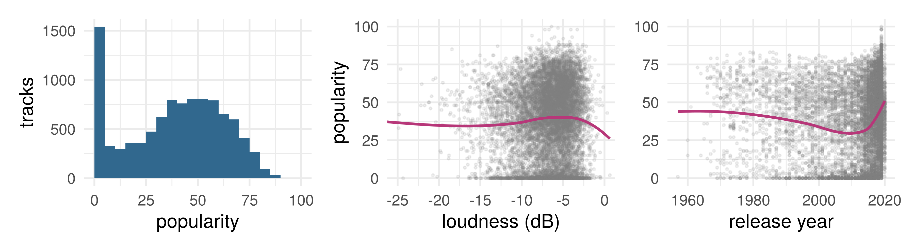
Week 5: functional structures
LSE
Part 1: the task and the protocol
Part 2: ridge and lasso
Part 3: additive models
Part 4: trees and forests
Part 5: neural networks
Part 6: which structure?
Last week: optimization, the general concepts and the methods that fit a model
This week: a few specific families of supervised models, each with its own functional structure, each introduced briefly. Every one of them gets more detail in a later week
Each family is a bet on the shape of \(f^\star\). To compare the bets we need one task and one protocol
Predict a track’s popularity (Spotify’s score, 0 to 100) from ten audio features (danceability, energy, loudness, valence, tempo, …), its release year and its genre. Loss: squared error

10,000 tracks from playlists of six genres (data note); the 5,000 training tracks plotted. Their popularity has variance 559: the MSE of predicting the mean for everyone
| Used for | How often | |
|---|---|---|
| Training | fitting | as much as you like |
| Selection (books: validation) | choosing among fits: a method, its knob | as much as you like |
| Test, reserved | one number for the model you chose, with its standard error | once |
ESL’s word for the third: a vault. Split once, at random, before looking (today 5,000, 2,000 and 3,000 tracks); refit the chosen model on training plus selection; open the vault once. A test set may score several competitors fixed in advance; nothing is chosen on it
Week 1’s one rule, now for evaluation data: a row is fair game for scoring only if nothing about the model was chosen on it.
What we can fit so far, each a bet on \(f^\star\): least squares, a plane (every input a slope); logistic regression, a plane for the log-odds (for a label, not today); \(k\) nearest neighbors, a local average, its \(k\) the knob
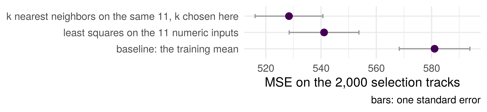
The local average (\(k = 100\)) and the plane, one standard error apart. Can a different shape beat both? The test set stays shut
Try several types of model, each with a different functional structure for \(f\):
| Structure | Family | The knob |
|---|---|---|
| a plane, shrunk or sparse | ridge, lasso | \(\lambda\), how hard the penalty pulls |
| a sum of one-input curves | additive splines | \(J\), how many basis functions per input |
| rectangles with a constant in each | a tree | its depth |
| an average of many trees | a random forest | (defaults today) |
| a composition: a GLM of GLMs | a neural network | \(M\), how many hidden units |
and tune each model so that it is the best version of its kind: every knob chosen on the selection tracks, as \(k\) was. Then compare the best of each kind
Motivation: week 4 stopped gradient descent early, and the number of steps became a knob that controlled how far the fit went. Can the knob be written into the objective instead?
For some penalty function \(\mathcal P_\lambda\), which depends on a tuning parameter \(\lambda\), the estimator
\[\hat \beta_\lambda = \arg \min_\beta \| \mathbf y - \mathbf X \beta \|^2_2 + \mathcal P_\lambda(\beta)\] is “regularized” or shrunk (shranken?) toward values that decrease the penalty. Often \(\mathcal P_\lambda = \lambda \| \cdot \|\) for some norm
Many ML methods are optimizing “loss + penalty”
Originally motivated by problems where \(\mathbf X^T \mathbf X\) is uninvertible (or badly conditioned, i.e. almost uninvertible)
If \(p > n\) then this always happens
Least squares estimator is undefined or numerically unstable
For some constant \(\lambda > 0\), \[\text{minimize } \| \mathbf y - \mathbf X \beta \|^2_2 + \lambda \| \beta \|^2\] Shrinks coefficients \(\hat \beta\) toward 0
Larger coefficients are penalized more (squared penalty)
Set the gradient of \(\| \mathbf y - \mathbf X \beta \|^2 + \lambda \| \beta \|^2\) to zero (exercise 2): \[ (\mathbf X^T\mathbf X + \lambda I)\,\hat\beta_\lambda = \mathbf X^T\mathbf y \] \[ \hat\beta_\lambda = (\mathbf X^T\mathbf X + \lambda I)^{-1}\mathbf X^T\mathbf y \]
\(\mathbf X^T\mathbf X + \lambda I\) is invertible for every \(\lambda > 0\), whatever \(n\) and \(p\): one solution even when \(p > n\)
\(\lambda \to 0\): least squares (when it exists). \(\lambda \to \infty\): \(\hat\beta_\lambda \to \mathbf 0\)
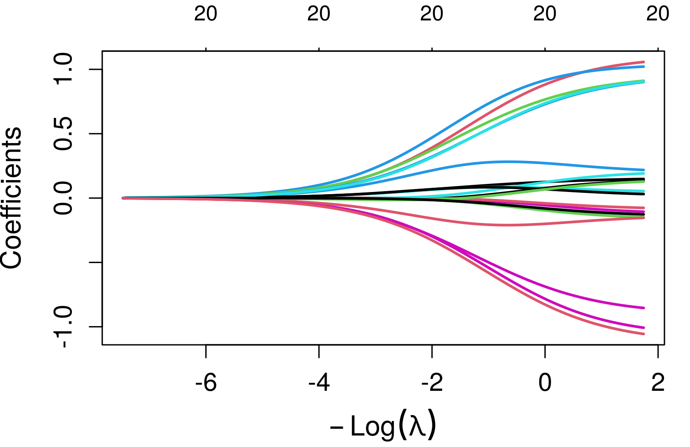
\(\hat\beta_\lambda\) against \(-\log\lambda\): the 16 standardized inputs (eleven numeric, five genre dummies), six named
A simple diff to remember lasso/ridge is via the penalty/constraint (1-norm instead of 2-norm). Lasso is
\[\text{minimize } \frac{1}{2n}\| \mathbf y - \mathbf X \beta \|_2^2 \text{ s. t. } \| \beta \|_1 \leq t\] where \(\| \beta \|_1 = \sum_{j=1}^p |\beta_j|\). Lagrangian form
\[\text{minimize } \frac{1}{2n} \| \mathbf y - \mathbf X \beta \|_2^2 + \lambda \| \beta \|_1\]
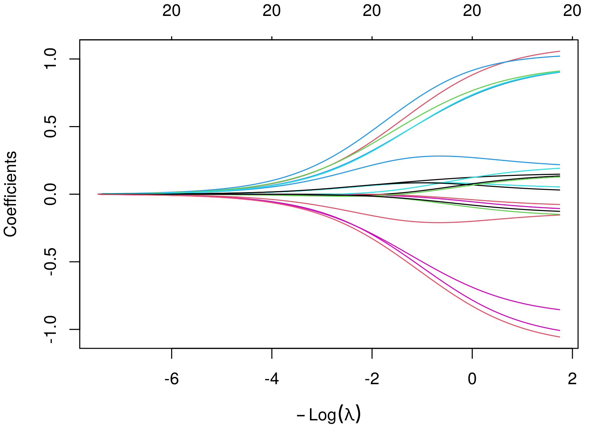
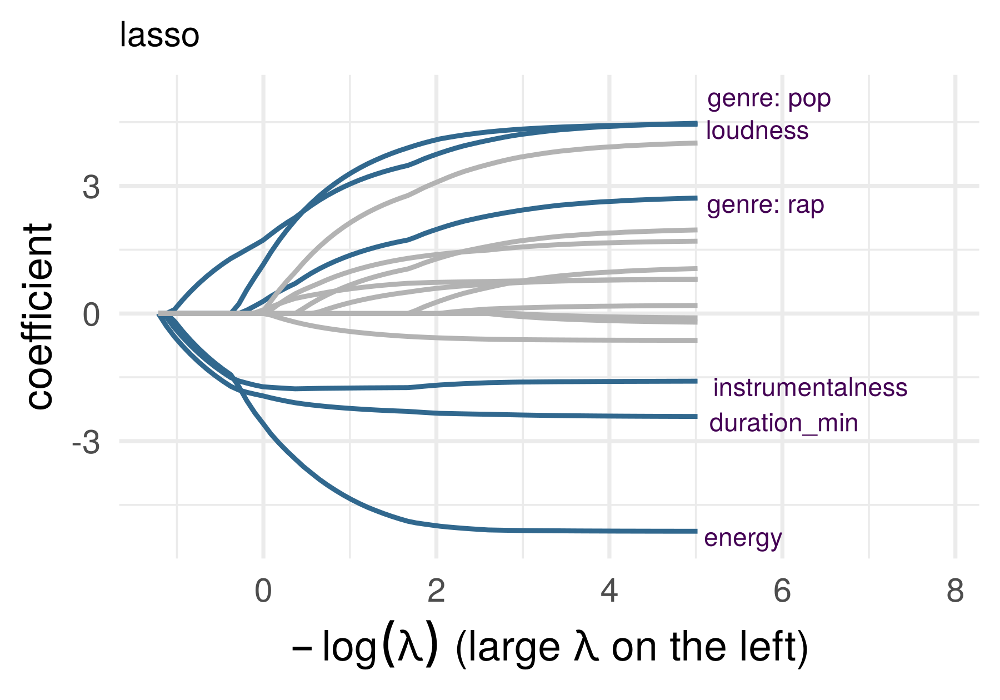
Spotify, the same 16 inputs, large \(\lambda\) on the left. The lasso’s coefficients are exactly zero over whole ranges of \(\lambda\) and enter one at a time; ridge’s are never zero. Why, and what the lasso does when \(p > n\): week 7
Week 1’s data, life expectancy on GDP per capita, 142 countries (no log this time). Three ways to turn a line into a curve
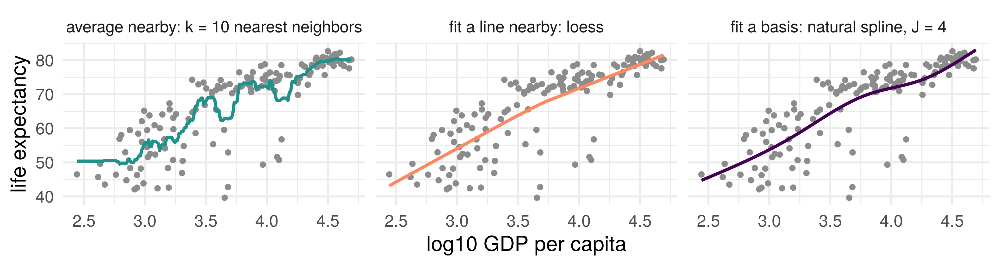
Average nearby (\(k\)-NN; a kernel weights by distance instead of cutting at \(k\)). Fit a line nearby (loess). Fit a basis: fixed curves, combined by least squares. We now focus on the third
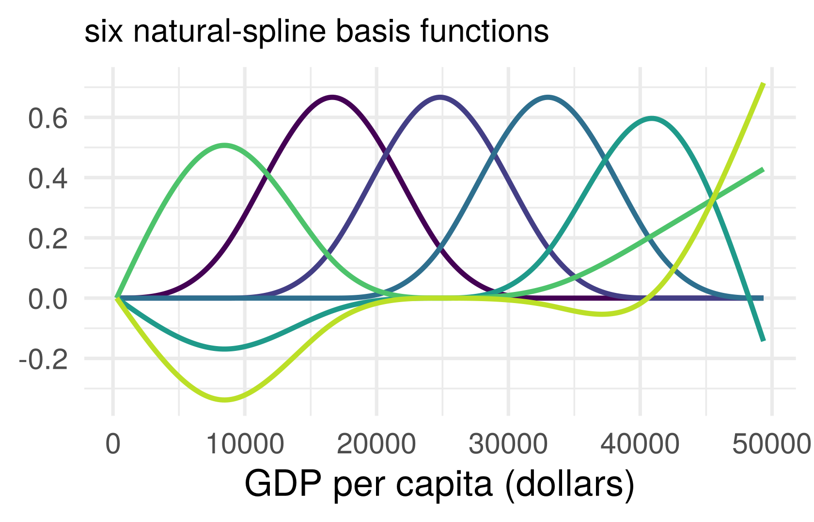
A basis: fixed functions \(b_1(x), \ldots, b_J(x)\) of one input, combined by least squares: \[
f(x) = \beta_0 + \sum_{j=1}^J \beta_j\, b_j(x)
\] linear in \(\beta\): lm(lifeExp ~ ns(gdp, df = J)), ns() building the \(J\) columns
A natural cubic spline: cubic pieces joined smoothly at knots, linear beyond the ends. The basis functions are the bends the knots allow; lm adds \(\beta_0\)
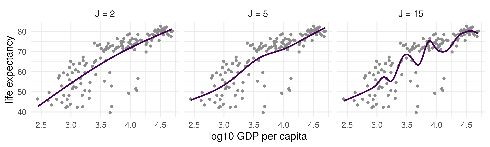
Small \(J\): almost a line. Large \(J\): the curve follows the points, and at \(J = n\) it passes through every one (training error zero). Which \(J\)? The selection set, as for \(k\) and \(\lambda\). Week 7: a penalty on wiggliness instead, with \(J\) as a ceiling
\[g(\mathbb E[\mathbf y | \mathbf X]) = \beta_0 + \beta_1 \mathbf x_1 + \beta_2 \mathbf x_2 + \cdots + \beta_p \mathbf x_p\]
\[g(\mathbb E[\mathbf y | \mathbf X]) = \beta_0 + f_1( \mathbf x_1) + f_2( \mathbf x_2) + \cdots + f_p(\mathbf x_p)\]
Includes linear models as special case if \(f_j(\mathbf x_j) = \beta_j \mathbf x_j\)
Today each \(f_j\) is a spline with \(J\) basis functions, so the whole model is one least-squares fit on \(pJ\) columns: lm(y ~ ns(x1, J) + ns(x2, J) + ...). The GAM in the reading is this model, with a link
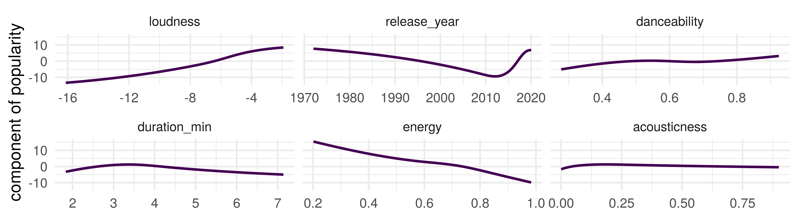
One fit, 30 coefficients, and a curve per input to read instead of a coefficient: what the model adds for that input with the others held fixed
Age >= 50 then yes, otherwise continueHighRisk == TRUE then yes, otherwise continueJob == CareWorker then yes, otherwise noThis is (arguably) more interpretable than a linear model with multiple predictors
(Note: this is not the real vaccination criteria, but it was close to this in early 2021)
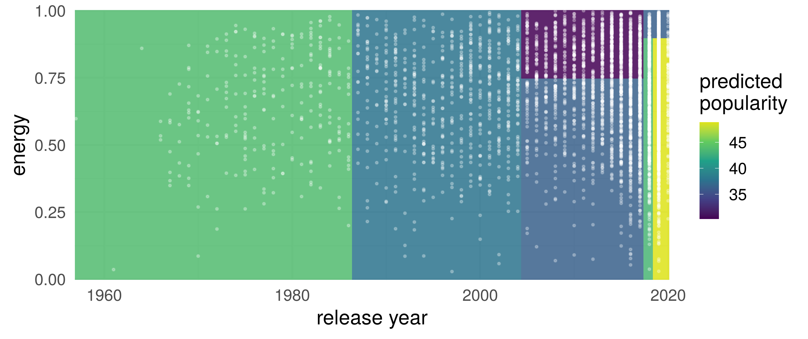
Each leaf is a rectangle with one value; the training tracks in white. The three narrow strips on the right are the leaves for 2018 and for 2019 to 2020, split again by energy
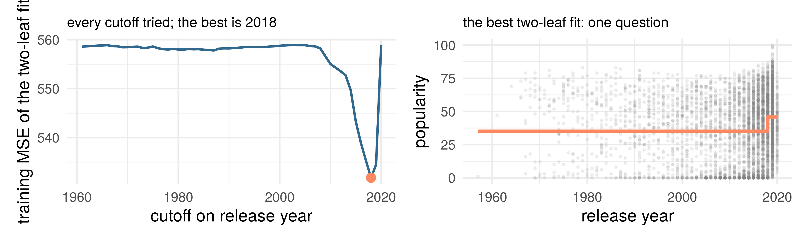
For one input: try every cutoff, predict each side’s mean, keep the cutoff with the smallest training MSE. One question, two leaves
“Stratification of the feature space”
Input: subset of data
For each predictor variable x_j in subset
Scan cutoff values to find the best split for x_j (last slide)
Output: the predictor and cutoff with the best improvementStarting from the full dataset, compute the first split as above
Recurse: take the two subsets of data from each side of the split and plug them both back into the same function
Until some stopping rule prevents more splitting (today: a maximum depth, the tree’s knob; growing deep and pruning back is week 8)
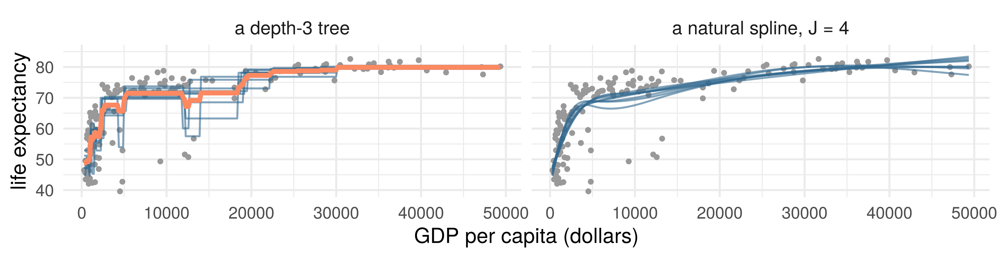
Week 1’s countries, resampled eight times (blue, one fit per resample). The trees’ cutoffs move with the sample and the steps move with them; the splines barely move. Orange: the average of the eight trees
A random forest is a method that combines many trees into one model: it grows hundreds of trees, each on a resample of the training rows with a random subset of the inputs offered at each split, and averages their predictions
The last slide’s orange line, with hundreds of trees instead of eight: one model, smoother and more stable than any one tree
Today: randomForest() with its defaults, no knob. How it works and why averaging helps: week 8
Week 3’s GLM: a link applied to a linear predictor. Now iterate it
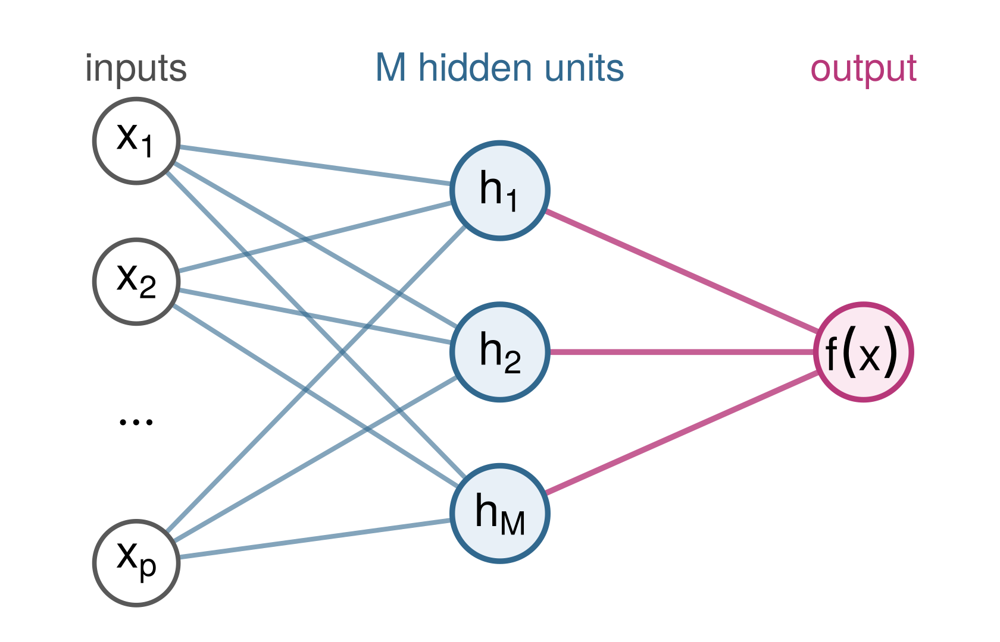
Each hidden unit is a logistic regression of the inputs, with its own weights: \(h_k(x) = \sigma(w_{k0} + w_k^T x)\), where \(\sigma(z) = 1/(1 + e^{-z})\)
The output is a linear regression on the hidden units (logistic, for a label): \(f(x) = \beta_0 + \sum_{k=1}^M \beta_k\, h_k(x)\)
A GLM whose inputs are the outputs of \(M\) GLMs. Iterate once more: a deep network
A basis like part 3’s, except that the basis is fitted to the data along with the coefficients, and each \(h_k\) uses every input at once
What it can represent. With enough hidden units, a network can come as close as you like to any smooth \(f^\star\) (stated, week 11). The price: \(M(p + 1) + M + 1\) weights, all to be fitted from the data
How it is fitted. Week 4’s stochastic gradient descent, on a loss with every feature of week 4’s part 3: not one valley but many, with plateaus and saddles between them
The knob. \(M\), the number of hidden units, chosen on the selection tracks like the others; depth and a penalty on the weights are later knobs. In R, nnet(size = M)
Today the network is one more structure in the comparison; how it is built and trained in depth is week 11’s, and ST311’s
\(p = 10\) inputs, uniform on \([-1, 1]\); \(y = f^\star(x) + \varepsilon\), noise variance \(\sigma^2 = 1\). Three truths, each using two or three inputs:
One protocol. 300 training, 100 selection, 2,000 test rows. Seven competitors: least squares; lasso (\(\lambda\)); \(k\)-NN (\(k\)); additive splines (\(J\)); a tree (depth); a forest; a network (\(M\)). Knobs chosen on the selection rows, the fit refitted on training plus selection, scored once
For each truth: which family wins, which loses, and why?
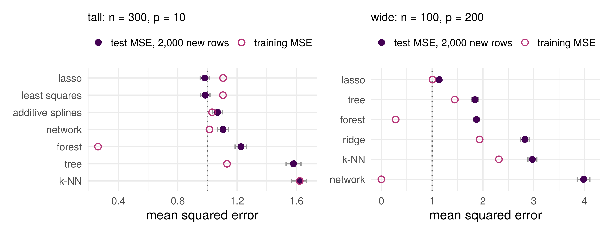
Dotted line: the noise variance, the smallest population MSE. For this sparse truth the lasso ties least squares when \(n \gg p\), and alone stays near the floor when \(p > n\)
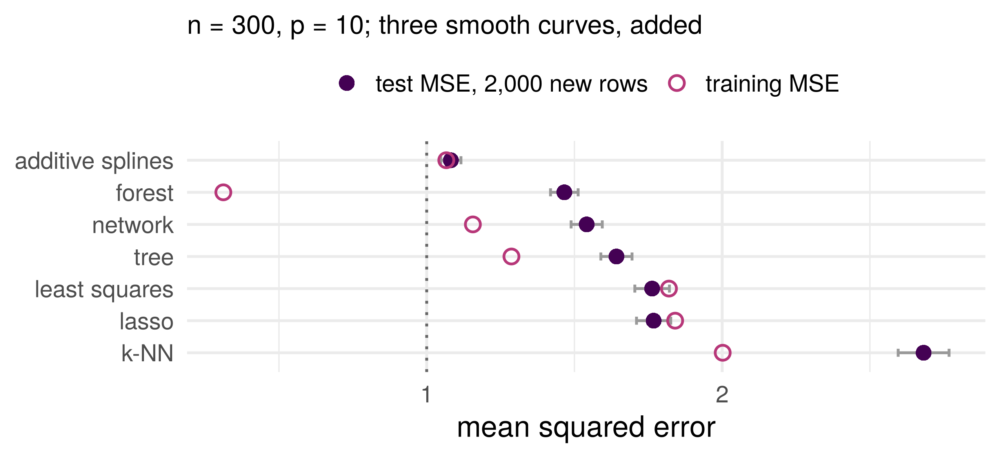
The additive fit was built for this truth. A forest can bend, with rectangles; a plane cannot bend at all
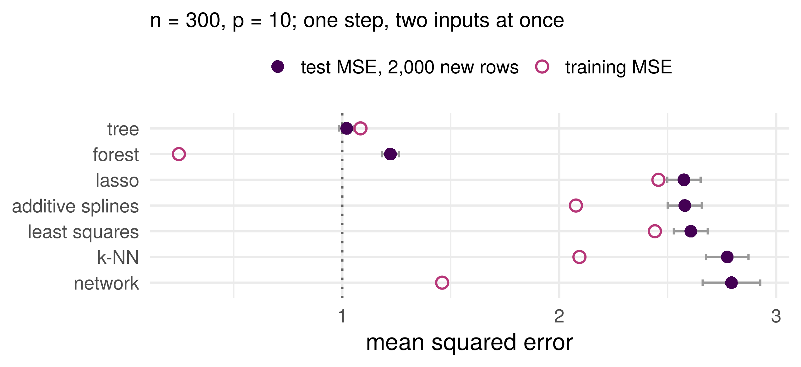
A sum of one-input functions can hold each input’s share of this step, two thirds of the signal at best, and not the product. Two questions in a row hold all of it
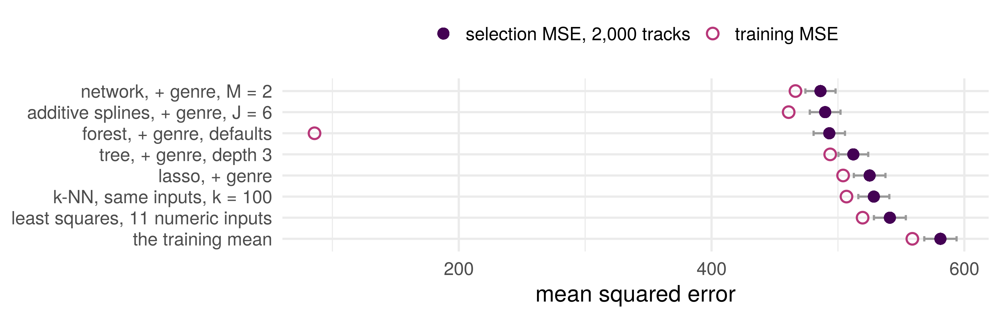
Knobs chosen on the selection tracks, scored there. The three that can bend beat the plane by about four standard errors and are within one of each other; the forest’s training score is 86. The vault stays shut: the seminar refits and opens it once
| Axis | The question about \(f^\star\) | Who bets which way |
|---|---|---|
| wide or tall | how \(p\) compares with \(n\) | least squares, the additive fit and a network need \(n \gg\) their parameters; ridge and the lasso fit at any \(p\) |
| sparse or dense | how many inputs matter | the lasso bets few; least squares and ridge spread the fit over all; a forest tolerates idle inputs, \(k\)-NN pays for them |
| smooth or discontinuous | how \(f^\star\) moves with each input | splines, \(k\)-NN and networks bet smooth; trees bet on steps |
| additive or interactive | whether inputs act separately | the additive fit bets separately; trees, forests, \(k\)-NN and networks allow interactions |
Four separate questions, not one scale from simple to complex. A family is a bet on the answers; a selection set says which bet paid on these data
Week 1’s curse: \(k\)-NN lost on every truth, ten inputs and 300 points. Week 4’s no free lunch: no family won every truth, and none can.
On most rows of the leaderboards the training MSE sat below the test or selection MSE, the forest’s by a factor of four on the truths and of six on Spotify; on a few rows it sat above. Luck, or a law, and what are the exceptions?
Training data \((x_i, y_i)\), \(i = 1, \ldots, n\), independent draws from the population; a class \(\mathcal F\) fixed before the data (the planes; the spline fits with a given basis); \(f_{\mathcal F}\) the best in \(\mathcal F\), the minimizer of \(R\) over it; \(\hat f\) the empirical risk minimizer, the minimizer of \(\hat R_n\) over \(\mathcal F\) (week 4)
Three numbers: \(\mathbb E[\hat R_n(\hat f)]\), \(R(f_{\mathcal F})\), \(\mathbb E[R(\hat f)]\). Put them in order, and write down what you used to do it.
A function fixed before the data has an unbiased training error; \(\hat f\) was chosen to make its own small, and cannot beat \(f_{\mathcal F}\) on the population
Training data i.i.d.; \(\mathcal F\) fixed before the data; \(\hat f\) the empirical risk minimizer over \(\mathcal F\); \(f_{\mathcal F}\) the best in \(\mathcal F\) (risks finite, minimizers exist). Then \[ \mathbb E\big[\hat R_n(\hat f)\big] \;\le\; R(f_{\mathcal F}) \;\le\; \mathbb E\big[R(\hat f)\big] \]
Training error flatters the model: on average it sits below the best risk the class can reach, and the fitted model’s risk above it. A test set estimates \(R(\hat f)\); its average is the right end.
Proof: exercise 1. Covers least squares, a fixed spline basis, ridge and lasso with a fixed radius; not a fixed \(\lambda\), a tree, a forest, \(k\)-NN, or a knob chosen on the data
This week: exercises 1 and 2 at the top of the notebook. The optimism theorem’s proof, three lines with numbered hints; and ridge’s normal equations, with why \(\mathbf X^T\mathbf X + \lambda I\) is invertible
In the seminar: the Spotify task with every family. Each knob chosen on the selection tracks, then the vault opened once for the leaderboard
A plane, a sparse plane, a sum of curves, a set of rectangles, an average of many, a composition. Four questions about the world decide which bet pays
Fit on the training rows, choose on the selection rows, open the test set once
On average, for every class and every minimizer. How much flexibility to allow, and how to choose it: week 7
ST310 Machine Learning